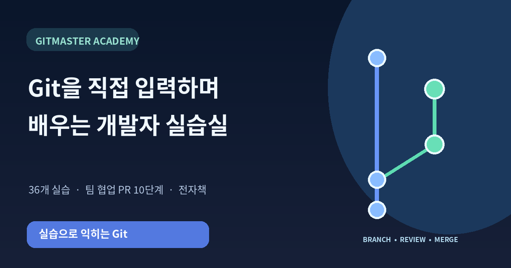

기초부터 단계적으로
설치 가이드, 파일 편집, diff, add, commit, branch, merge, 복구를 36개 실습으로 학습합니다.
 KINORA대화가 이어지는 하루, 가족의 안심까지키노라 만나보기 ↗
KINORA대화가 이어지는 하루, 가족의 안심까지키노라 만나보기 ↗Git 명령어를 암기하는 대신 브라우저 실습실에서 직접 입력하세요. 시각화로 브랜치와 커밋을 이해하고 팀 리뷰와 병합까지 연습합니다.
36개 Git 실습 · 10개 PR 협업 미션 · PDF 전자책
설치 가이드, 파일 편집, diff, add, commit, branch, merge, 복구를 36개 실습으로 학습합니다.
Draft PR, Ready, 리뷰 요청, 코드 수정, 승인, CI와 병합을 10개 단계로 나누어 연습합니다.
명령어와 옵션의 뜻을 터미널 해설과 연계 PDF에서 찾아보세요.